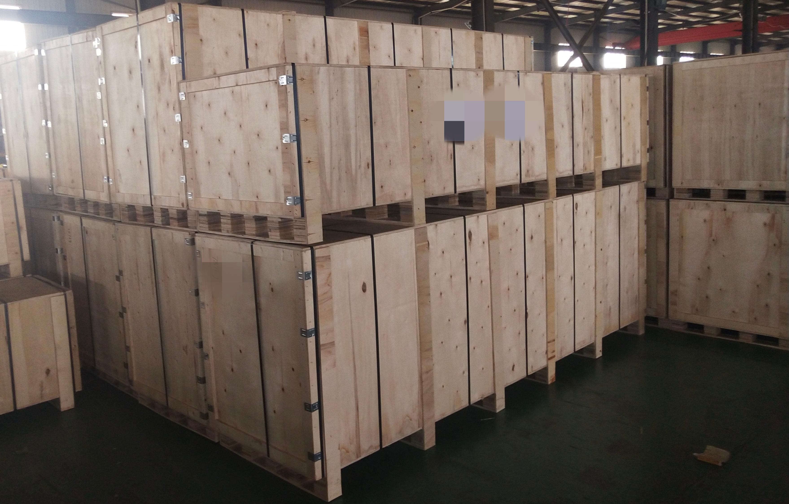
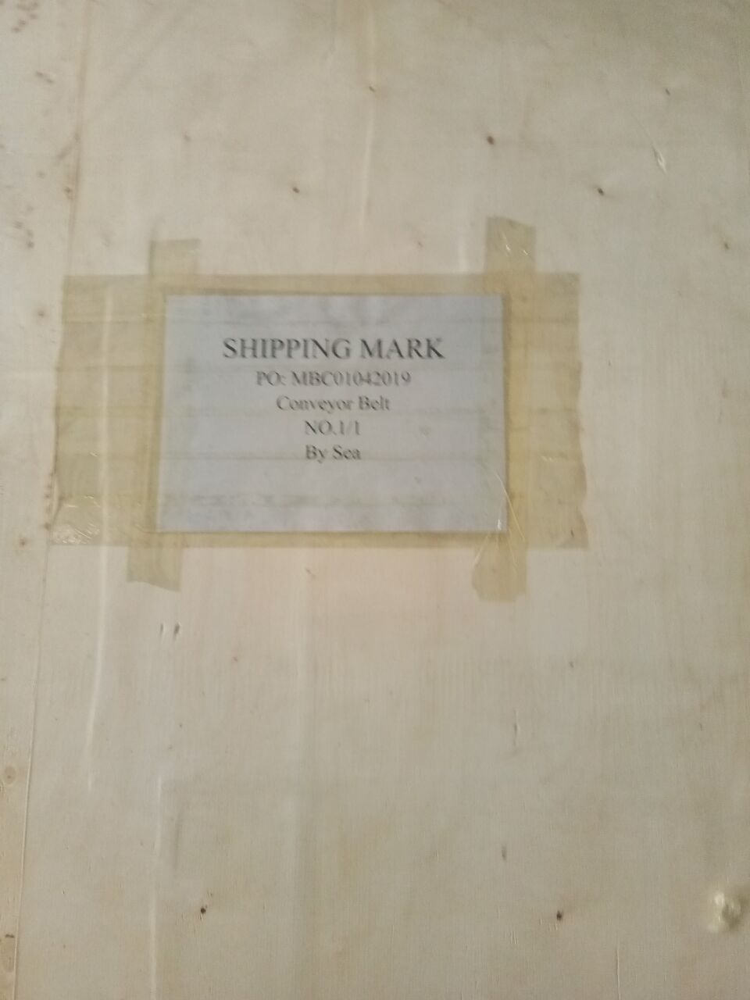

Manufacturing Since 1998ISO 9001 CertifiedDUNS Registered
ENGINEERING & OEM
From Drawing Review to Delivery Confirmation
YIYI Mesh Belt supports OEM builders, distributors, and replacement buyers through drawing-based manufacturing, sample confirmation, matched components, and structured project coordination.
Engineering support is not only about reading a drawing. It is about understanding structure, fit, drive method, replacement risk, production feasibility, and delivery requirements before batch production begins. YIYI Mesh Belt uses a structured coordination process to help reduce mismatch, improve project clarity, and support more dependable OEM cooperation.
PDF / DWG / DXF DrawingOld Belt Sample AcceptedMatched Sprocket ReviewExport Delivery Coordination
Drawing Review + Sample ConfirmationProject inputs are checked before production so OEM and replacement buyers can reduce mismatch risk.
01
Drawing Review
02
Sample Confirmation
03
Matched Components
04
Production Confirmation
05
Export & Delivery
06
Technical Follow-Up
START WITH YOUR PROJECT TYPE
Choose the Fastest Path to Engineering Review
Different buyers start with different information. If you already have a drawing, send it. If you are replacing an existing belt, send the old sample or machine photos. If you are building a repeat OEM supply line, start with engineering coordination.
📄
I Have a Drawing
Best for OEM builders and technical buyers with PDF, DWG, DXF, or a dimensioned sketch ready for review.
The fastest way to reduce back-and-forth is to send the key project inputs at the start. YIYI can work from full drawings, old belt samples, or a clear replacement request, but the more complete the intake package is, the faster the review becomes.
📄
Drawing Package
Send PDF, DWG, DXF, or a dimensioned sketch showing width, pitch, rod size, edge format, running direction, and drive method. This is the best starting point for OEM projects and repeat supply.
🔄
Old Belt Sample or Photos
For replacement projects without formal drawings, send an old belt section, machine-side photos, sprocket photos, and measured dimensions. This helps confirm fit and reduce mismatch risk before production.
🕘
Project Timing and Quantity
Share target quantity, urgency, destination country, and whether matched parts are needed. This lets YIYI align engineering review with production scheduling and export delivery coordination from day one.
WHY ENGINEERING SUPPORT MATTERS
Technical Problems Begin Before Production, Not During Shipment
In industrial conveyor belt projects, most avoidable problems are not discovered during delivery - they begin earlier, during drawing interpretation, fit confirmation, drive matching, replacement review, and application assessment. By the time a belt arrives at an installation site, it is too late to correct what was not confirmed at the specification stage.
A structured engineering review helps identify and resolve technical questions before manufacturing begins. This is not about adding steps to a project - it is about removing uncertainty from the stages where it is most expensive to discover it.
Drawing interpretationConfirming what the drawing actually specifies before it is used as a production instruction - including tolerances, edge detail, and drive geometry.
Fit confirmationVerifying that the belt, matched parts, and conveyor system are compatible before batch production is released.
Drive matchingReviewing drive method, sprocket geometry, and engagement logic to ensure the belt will run correctly on the existing or planned system.
Replacement risk reviewAssessing whether the replacement belt will perform correctly on the existing conveyor without requiring system modification.
Production feasibilityConfirming that what is specified can be produced correctly - within tolerance, on schedule, and with the right materials.
Drawing to Delivery CoordinationEngineering review connects sample confirmation, production verification, packing, and export delivery.
WHO THIS SUPPORTS
•OEM equipment manufacturers specifying new belt systems
•Technical procurement teams managing multiple SKUs
•Plant engineers sourcing direct replacement belts
STEP 01 - DRAWING REVIEW
Drawing Review Before Production
YIYI Mesh Belt reviews customer drawings and specifications before production begins. The purpose is not to validate the drawing - it is to clarify what is being made and confirm that it can be manufactured correctly before any material is prepared or cut.
Drawing review may cover belt structure, pitch, width, rod size, edge detail, drive method, matched component requirements, and application considerations. Questions raised during review are resolved in writing before production starts - not discovered during or after manufacturing.
Belt structure and geometryPitch, wire diameter, weave type, rod arrangement, and structural consistency - confirmed against the drawing before production instructions are issued.
Dimensional requirementsWidth, length, tolerance ranges, and any dimensional constraints from the conveyor layout - reviewed before the first piece is produced.
Drive method and running directionGear drive, chain drive, self-stacking, side-driven - confirmed against the sprocket and conveyor configuration.
Edge and rod detailsEdge treatment type, rod position, and end finish - confirmed to the drawing and checked for installation compatibility.
Matched component requirementsWhether sprockets, shafts, rods, or connecting parts are also required - identified during the drawing review stage, not after the belt is already built.
Production feasibilityIf any specification cannot be produced as drawn, this is identified and discussed before manufacturing starts - not after a non-conforming batch is already completed.
Drawing Review Before ProductionStructure, pitch, width, edge detail, drive method, and matched parts are clarified before manufacturing.
Dimension CheckMeasurements are verified against project requirements.
Spec ConfirmationInspection records support repeat production.
DRAWING FORMATS ACCEPTED
PDFDWGDXFSketch + dimensionsSample + measurements
Engineering team response within 24 hours of drawing submission.

Sample ConfirmationOld samples, drawings, and measured dimensions help confirm fit before batch production.
Width MeasurementFit-related dimensions are checked before release.
Structure DetailEdge and rod details are reviewed for compatibility.
STEP 02 - SAMPLE CONFIRMATION
Sample Confirmation and Fit Check
For OEM development projects and replacement projects, sample confirmation provides a verification stage between specification and batch production. Instead of committing directly to a full order based on a drawing alone, a sample allows the customer to verify that the produced belt matches the specification - and that it fits the intended system - before large-quantity production is released.
YIYI Mesh Belt can review customer-supplied samples, confirm dimensional alignment, check structural details, and identify fit-related questions before the order moves into full manufacturing. Where samples are produced by YIYI Mesh Belt, the same production process is used as for the mass order - no separate sample-only process that could give a misleading result.
Customer sample reviewExisting belt or reference sample reviewed against the new order specification - pitch, wire diameter, width, edge treatment, and structural consistency all checked.
Dimensional comparisonSample dimensions compared to drawing and to conveyor system requirements - confirming that what has been produced matches what was specified.
Structure detail checkWeld quality, rod alignment, edge finish, and assembly consistency verified against the production specification.
Fit-related review before productionConfirming that rod position, pitch geometry, and edge dimensions are compatible with the sprocket, frame, and drive system before batch production begins.
Sample retention for repeat referenceApproved samples retained by YIYI Mesh Belt as a batch reference for future repeat orders - reducing re-confirmation time on subsequent orders.
Replacement projects often involve more than copying a belt's width and length. The existing conveyor system - its sprocket position, rod size, mesh opening, edge format, running clearance, and drive logic - all affect whether a new belt will install and run correctly without requiring system modification.
Common Replacement Risk
Belt Arrives - Does Not Fit the Existing Drive
A replacement belt ordered to width and length only may arrive with a different rod pitch, sprocket engagement geometry, or edge format from the original. Installation is delayed or impossible without modifying the conveyor system.
✓YIYI Mesh Belt Approach
Replacement Specification Reviewed Against Existing System Before Production
Before producing a replacement belt, YIYI Mesh Belt reviews the existing belt sample, conveyor layout information, and drive system details - confirming that the replacement will be produced to match the actual installation requirements, not only the nominal dimensions.
Common Replacement Risk
New Belt Runs Unevenly - Tracking Problem After Installation
A belt with slightly different pitch consistency, diagonal asymmetry, or rod position from the original may run unevenly on an existing system - drifting, jumping, or causing increased wear on guide rails after installation.
✓YIYI Mesh Belt Approach
Diagonal Measurement and Pitch Consistency Verified During Production
YIYI Mesh Belt performs diagonal measurement checks during belt production to verify geometric consistency. For gear-driven replacement belts, a first-piece running test against the matched sprocket is conducted and video-documented before mass production is released.
Old Belt ReferenceEdge format, rod position, and weld detail are reviewed.
Drive MatchingBelt and sprocket engagement are checked together.
WHAT YIYI MESH BELT REVIEWS FOR REPLACEMENT MATCHING
✓Existing belt dimensions✓Sprocket position and pitch✓Rod size and spacing✓Edge format and guide clearance✓Drive method and running direction✓Material grade confirmation
For replacement buyers, the priority is often not only to receive a belt - it is to reduce the risk that the new belt requires system modification, causes installation delay, or performs differently from the original.
Engineering support does not stop at the belt body. In many projects, matched components also require review and confirmation. When belt and drive parts are considered together - rather than sourced separately and assembled without cross-reference - installation risk is reduced and system coordination becomes clearer before delivery.
MATCHED COMPONENT 01
Drive Sprockets
Sprocket pitch, tooth profile, shaft bore, and keyway confirmed against belt specification. YIYI Mesh Belt manufactures matched sprockets - ordering belt and sprockets from the same review eliminates pitch mismatch risk between separately sourced components.
MATCHED COMPONENT 02
Cross Rods and Connecting Rods
Spare cross rods, connecting rods, and pins matched to the belt specification - same alloy, same dimensional tolerance, same production batch where possible. Supplied with the main order to support on-site maintenance without separate re-sourcing.
MATCHED COMPONENT 03
Shafts and Connection Parts
For projects where belt connection shafts, drive shafts, or structural connection parts are also required, these can be reviewed and confirmed together with the belt specification - reducing the risk of dimension or material mismatch between parts from different sources.
Belt + Matched SprocketsDrive components are reviewed with the belt, not purchased as isolated parts.
Matched ComponentsSprockets, rods, shafts, and connecting parts can be reviewed as one system.
WHY MATCHED COMPONENTS REDUCE RISK
When a belt and its drive components are sourced separately, tolerance accumulation between the two can cause installation problems that were not visible during individual part inspection. Reviewing them together - and confirming compatibility before production - removes this tolerance gap from the project before it becomes an installation problem.
STEP 05 - PRODUCTION CONFIRMATION
Production Confirmation Before Batch Release
Before full batch production begins, project details need to be reconfirmed. This is not a duplication of the drawing review - it is a final alignment check between what was specified, what was sampled, what matched components are required, and what the production schedule needs to deliver.
In OEM projects where consistency, documentation, and communication carry as much weight as the product itself, this confirmation step reduces the risk of avoidable errors entering the batch - errors that are inexpensive to prevent at the confirmation stage and expensive to correct after the belt is produced and packed.
Specification reconfirmationDrawing version, approved dimensions, and alloy grade confirmed against the production work order before the batch is released to the shop floor.
Sample status confirmedWhether a sample has been approved - and retained as a batch reference - is confirmed before full production is authorised. No batch proceeds without a confirmed sample status.
Matched parts alignedSprockets, rods, and accessories confirmed as ready or in process - so belt production and component production can be aligned for delivery at the same time.
First-piece review for new OEM specificationsFor new OEM specifications where this is required, a first-piece inspection record is produced from the first completed belt in the batch - confirming that mass production matches the approved specification before the full batch continues.
Documentation preparedMaterial test reports, inspection records, certificate of origin, and any project-specific documents prepared concurrently with production - not assembled after the belt is already waiting for export clearance.
Production ConfirmationSpecification, material, inspection, packing, and delivery details are aligned before release.
STANDARD DOCUMENTATION - EVERY ORDER
✓Material Test Report (MTR) - alloy, tensile, hardness
✓Final inspection record - dimensions and surface
✓Certificate of Origin - customs support
•
•
•
OEM PRIVATE LABEL
OEM Private Label and Confidential Cooperation
For suitable projects, YIYI Mesh Belt supports OEM supply coordination. This includes project-based communication, repeat production support, and customer-oriented delivery handling - where the supply relationship is managed as a long-term manufacturing partnership rather than a series of independent transactions.
Where required, shipment presentation and product identification can be coordinated according to project needs. OEM private label and confidential cooperation are treated as part of long-term project discipline - not as informal, one-time accommodations.
Project-based communicationTechnical and commercial communication managed under the project structure - with consistent contacts, documented decisions, and production aligned to the project schedule.
Repeat production supportSpecification retained after first order - subsequent orders placed by reference to the confirmed specification, not requiring re-submission of all parameters. Faster repeat lead time for established OEM relationships.
Shipment presentation coordinationPackaging, labelling, and product identification coordinated according to project requirements. YIYI Mesh Belt branding can be excluded from packaging where this is part of the OEM agreement.
Confidentiality as standard practiceOEM partnerships are not disclosed in marketing materials without explicit consent. Customer relationships, production data, and project specifications treated as confidential under the cooperation agreement.
OEM-Ready Export PackingShipment presentation and product identification can be coordinated by project requirement.

Shipping MarkLabel and packing information reviewed before dispatch.
Packed GoodsPre-shipment photos support buyer confirmation.
STEP 06 - EXPORT & DELIVERY
Export Coordination and Delivery Support
Engineering support is not complete until delivery requirements are also understood and coordinated. For international OEM projects, packing, documentation, and delivery scheduling are not administrative afterthoughts - they are part of the project execution cycle that determines whether the belt arrives at the installation site ready for use.
🕘
Export Packing Coordination
Export-standard packing reviewed against product dimensions, transport mode, and destination. Plywood crate, moisture-sealed inner wrap, and belt coiled to minimum bend radius - confirmed before packing begins, not improvised at the warehouse.
📦
Shipment Document Preparation
Commercial invoice, packing list, certificate of origin, material test reports, and any project-specific documentation prepared and reviewed before the shipment is released - reducing clearance delays at the destination.
●
Delivery Scheduling Support
Production schedule, packing timeline, and shipment booking coordinated together - so delivery date commitments are based on realistic production and logistics capacity, not optimistic estimates that create problems at the shipping stage.
📋
Pre-Shipment Packing Review
Before a shipment is released, packing condition and document completeness are reviewed internally. Photos of packed goods are taken and shared with the customer before the container is sealed or the courier pickup is confirmed.
📈
Pre-Shipment Communication
Customer notified before shipment release - with packing photos, document copies, and tracking information. No shipments released without customer awareness of the dispatch status and expected arrival window.
🐟
International Delivery Experience
YIYI Mesh Belt has shipped to 30+ countries via sea freight, air freight, and express courier. Export process, customs documentation, and destination-specific packing requirements are managed with experience - not guessed.
Export PackingPackaging reviewed for international delivery conditions.
Document ReviewInspection record and shipment details are checked before release.
Shipment ReadyGoods are photographed and confirmed before dispatch.
AFTER DELIVERY
Technical Follow-Up After Delivery
For long-term OEM and distributor relationships, engineering support does not always end at shipment confirmation. The belt still needs to be installed, run in, and perform as specified in the actual application environment - and questions or issues do not always surface at the moment of delivery.
YIYI Mesh Belt treats technical follow-up as part of cooperation discipline - not as an optional extra that requires a formal service request to access. For established OEM partners and active distributor relationships, follow-up is part of the normal working rhythm.
Replacement continuity supportWhen a replacement belt reaches its natural service life, the retained specification allows re-ordering without repeating the full matching process. Lead time is shorter. Risk is lower.
Repeat production referenceApproved samples and production records retained at YIYI Mesh Belt. Repeat orders reference the retained batch - no re-specification required for established SKUs.
Application feedback reviewIf performance issues arise after installation - tracking problems, unusual wear patterns, premature fatigue - YIYI Mesh Belt reviews production records and engages technically, not defensively.
Later project refinementIf an OEM project evolves - new conveyor dimensions, changed drive geometry, updated alloy requirements - engineering review is available to update the specification before the next production run.
Long-Term Technical Follow-UpProduction records and project references support future replacement and repeat orders.
FOLLOW-UP RESPONSE COMMITMENT
•Active production orders: engineering response on technical queries
•Established OEM partners: performance follow-up at 6 and 12 months on request
•Post-installation technical questions: reviewed against production and inspection records
WHY THIS MATTERS FOR OEM BUYERS
Not a Generic Service Page. A Structured Project Commitment.
For OEM equipment builders, distributors, and replacement buyers, the value of engineering support lies in reducing uncertainty before production starts - and maintaining project clarity through to delivery confirmation.
Structured Project CoordinationFrom specification review to delivery confirmation, the goal is fewer surprises for the buyer.
A supplier that can review drawings, confirm fit, coordinate matched parts, align production details, and support delivery planning is not simply supplying a product. It is helping reduce risk across the whole project cycle - from specification to installation.
That is why this page is not structured as a generic service capability list. It describes a specific, structured sequence - drawing review, sample confirmation, replacement matching, matched component coordination, production confirmation, export coordination, and technical follow-up - that reduces the points at which avoidable problems typically enter an industrial belt project.
Yes. YIYI Mesh Belt reviews customer drawings and specifications before production begins. The review covers belt structure, pitch, width, rod size, edge detail, drive method, and application requirements. Drawing formats accepted include PDF, DWG, DXF, and dimensional sketches. Where a drawing is not available, a worn belt sample with measurements is also accepted as the basis for a production specification. All parameters are confirmed in writing before manufacturing starts - no assumptions are made from an incomplete or ambiguous drawing.
Yes. For OEM development and replacement projects, YIYI Mesh Belt can review samples, confirm dimensional alignment, check structure detail, and verify fit-related requirements before the order moves into full manufacturing. Where YIYI Mesh Belt produces the sample, the same production process is used as for the mass order - so the sample result reflects actual batch production quality, not a selectively prepared sample. Approved sample sections are retained as a batch reference for future repeat orders - reducing re-confirmation time and specification drift across multiple order cycles.
Yes. YIYI Mesh Belt supports replacement matching by reviewing the existing belt and conveyor system together - not only nominal width and length. This includes sprocket position and pitch, rod size and spacing, mesh opening, edge format and guide clearance, drive method, and running direction. The goal is to confirm that the replacement belt will install and run correctly on the existing system without requiring modification. For gear-driven replacement belts, a first-piece running test against the matched sprocket is conducted and video-documented before mass production is released.
Yes. Engineering support at YIYI Mesh Belt covers matched components where they are part of the project. Sprocket pitch, tooth profile, shaft bore, and keyway dimensions are confirmed against belt specification before machining. Cross rods, connecting rods, and pins are supplied matched to the belt - same alloy, same dimensional specification. Reviewing belt and drive parts together during the specification stage removes the tolerance accumulation that occurs when parts are sourced separately and assembled without cross-reference. For most projects, ordering belt and matched components in the same production batch also simplifies delivery coordination.
For suitable projects, yes. YIYI Mesh Belt supports OEM supply coordination including project-based communication, repeat production under retained specifications, and delivery handling coordinated according to customer requirements. Packaging and product identification can be configured to exclude YIYI Mesh Belt branding where this is part of the OEM agreement. Customer relationships, production data, and project specifications are treated as confidential - not disclosed in marketing materials without explicit consent. OEM cooperation is treated as a long-term manufacturing partnership, not as a casual or one-time arrangement.
Yes. Engineering support at YIYI Mesh Belt includes export packing coordination, shipment document preparation, and delivery scheduling. Packing is reviewed against product dimensions, transport mode, and destination requirements before packing begins - not improvised at the warehouse. Documents are prepared and reviewed before shipment release. Customers are notified with packing photos and document copies before dispatch. YIYI Mesh Belt has shipped to more than 30 countries via sea freight, air freight, and express courier - export documentation and destination-specific packing requirements are managed with direct experience.
START YOUR ENGINEERING REVIEW
Send Your Drawing. Engineering Review Within 24 Hours.
Send your drawing, sample, specifications, or project requirement to YIYI Mesh Belt. Our team can review fit, structure, matched parts, and production feasibility before manufacturing begins - and coordinate delivery requirements before the batch is released.
Drawing Review - 24 HoursSample Review Before Mass ProductionMatched Components AvailableDrum Test - Every Belt100+ OEM References On FileISO 9001 Certified
27,000 sqm Facility
200,000 m2 Annual Output
280+ Production Machines
30+ National Patents
20+ Countries Served
YY
YIYI Mesh Belt
Online · Engineering Response 24h
👋 Engineering team ready. Send your drawing or describe your project.